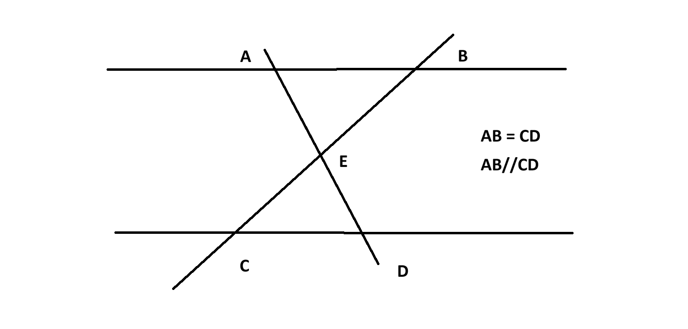

# -*- coding: utf-8 -*-
"""
Created on Wed Oct 28 20:49:47 2026

@author: a0544
"""

<!DOCTYPE html>
<html lang="ja">
<head>
    <meta charset="UTF-8">
    <meta name="viewport" content="width=device-width, initial-scale=1.0">
    <title>図形証明カードゲーム</title>
    <!-- Tailwind CSS CDN -->
    <script src="https://cdn.tailwindcss.com"></script>
    <!-- PyScript CDN -->
    <link rel="stylesheet" href="https://pyscript.net/releases/2024.1.1/core.css">
    <script type="module" src="https://pyscript.net/releases/2024.1.1/core.js"></script>
    <style>
        /* キャンバス上のタッチ操作で画面がスクロールするのを防ぐ */
        #draw-canvas {
            touch-action: none;
        }
    </style>
</head>
<body class="bg-slate-900 text-slate-100 font-sans min-h-screen flex flex-col justify-between p-4 select-none">

    <!-- ヘッダー -->
    <header class="text-center mb-2">
        <h1 class="text-2xl font-bold tracking-wider text-amber-400">図形証明 カードバトル</h1>
        <p class="text-xs text-slate-400">カードを上のゲーム画面にドラッグ＆ドロップしてロジックを進めよう！</p>
    </header>

    <!-- メインレイアウト (上部: ゲーム画面, 右側: ログ) -->
    <div class="grid grid-cols-1 md:grid-cols-3 gap-4 flex-grow mb-4">
        
        <!-- 左上：ゲーム画面 & 落書きエリア (2カラム分) -->
        <div class="md:col-span-2 bg-slate-800 border-2 border-dashed border-slate-600 rounded-xl p-4 flex flex-col items-center justify-between relative shadow-lg" id="drop-zone">
            
            <div class="w-full flex justify-between items-center mb-2 z-10">
                <span class="text-sm font-semibold text-slate-300">⚔️ バトルエリア / 証明問題</span>
                <!-- お絵描きツールバー -->
                <div class="flex gap-1.5 bg-slate-900/80 p-1 rounded-lg border border-slate-700">
                    <button id="btn-pen" onclick="setTool('pen')" class="px-2.5 py-1 text-xs bg-amber-600 rounded text-white font-bold transition">ペン</button>
                    <button id="btn-eraser" onclick="setTool('eraser')" class="px-2.5 py-1 text-xs bg-slate-700 hover:bg-slate-600 rounded text-white transition">消しゴム</button>
                    <button onclick="clearCanvas()" class="px-2.5 py-1 text-xs bg-red-700 hover:bg-red-600 rounded text-white transition">全消し</button>
                </div>
            </div>

            <!-- 問題画像と落書き用キャンバスを重ねるコンテナ -->
            <div class="relative w-full flex-grow flex items-center justify-center my-2 bg-slate-950/50 rounded-lg overflow-hidden border border-slate-700">
                <!-- 図形証明問題の画像 (srcを変更してください) -->
                
                
                <!-- 落書き用キャンバス (画像の上に重ねる) -->
                <canvas id="draw-canvas" class="absolute inset-0 w-full h-full cursor-crosshair"></canvas>
            </div>

            <!-- ドロップ案内のテキスト -->
            <div class="text-center z-10">
                <p id="drop-instruction" class="text-sm text-amber-300 font-medium animate-pulse">👇 下の手札からカードをここにドラッグ＆ドロップ！</p>
                <div class="flex justify-center gap-6 mt-2 text-xs text-slate-300">
                    <span id="player-hp">❤️ HP: 100</span>
                    <span id="enemy-hp">🛡️ 敵HP: 100</span>
                </div>
            </div>
        </div>

        <!-- 右側：ログ画面 -->
        <div class="bg-slate-800 border border-slate-700 rounded-xl p-4 flex flex-col shadow-lg">
             <h2 class="text-sm font-semibold text-slate-300 mb-2 border-b border-slate-700 pb-1">📜 バトルログ</h2>
    
             <!-- ★ touch-action: pan-y を追加して、縦方向のタッチスライドを最適化 -->
             <div id="log-container" class="flex-grow overflow-y-auto space-y-2 text-xs text-slate-300 pr-1 max-h-60 md:max-h-[350px]" style="touch-action: pan-y;">
                 <div class="p-2 bg-slate-900 rounded border-l-2 border-amber-500">ゲームが開始されました。カードを使って証明を進めよう！三角形AEBと三角形CEDの合同を示せ</div>
             </div>
        </div>

    </div>

    <!-- 下部：手札エリア (スライド可能) -->
    <div class="bg-slate-800 border border-slate-700 rounded-xl p-3 shadow-lg">
        <h2 class="text-xs font-semibold text-slate-400 mb-2">🃏 手札 (左右にスクロール可能)</h2>
        <div id="hand-container" class="flex gap-3 overflow-x-auto pb-2 pt-1 px-1 scrollbar-thin scrollbar-thumb-slate-600">
            <!-- Pythonから動的にカードが生成されます -->
        </div>
    </div>

    <!-- PyScript Pythonロジック -->
    <script type="py" config='{"packages": []}'>
        import js
        from pyodide.ffi import create_proxy

        # --------------------------------------------------------------------------
        # 【ゲームロジック記述エリア】
        # --------------------------------------------------------------------------
        class Point:
            def __init__(self,x,y,name):
                self.x = x
                self.y = y
                self.name = name
                
        class Angle:
            def __init__(self,vertexpoint,auxiliarypoint1,auxiliarypoint2,name):
                self.vertexpoint = vertexpoint
                self.auxiliarypoint1 = auxiliarypoint1
                self.auxiliarypoint2 = auxiliarypoint2
                self.name = name
                
            def set_value(self,value):
                self.value = value
                
        class Segment:
            def __init__(self,point1,point2,name):
                self.point1 = point1
                self.point2 = point2
                self.name = name
                
            def set_value(self,value):
                self.value = value
                
                
        class Line:
            def __init__(self,points,name):
                self.points = points
                self.name = name
                
        class Circle:
            def __init__(self,center,points,name):
                self.center = center
                self.points = points
                self.name = name
                
            def set_radius(self,value):
                self.value = value
                
        class Triangle:
            def __init__(self,segment1,segment2,segment3,angle1,angle2,angle3,name):
                self.segment1 = segment1
                self.segment2 = segment2
                self.segment3 = segment3
                self.angle1 = angle1
                self.angle2 = angle2
                self.angle3 = angle3
                self.name = name
                
        class segment_congruence:
            def __init__(self):
                self.congrbox = []
                
                
            def append(self,segment1,segment2):
                flag1 = False
                for i in range(len(self.congrbox)):
                    group = self.congrbox[i]
                    for j in range(len(group)):
                        segmentA = group[j]
                        if segmentA is segment1:
                            group.append(segment2)
                            flag1 = True
                            self.congrbox.pop(j)
                            self.congrbox.append(group)
                        elif segmentA is segment2:
                            group.append(segment1)
                            flag1 = True
                            self.congrbox.pop(j)
                            self.congrbox.append(group)
                            
                if flag1 == False:
                    group = [segment1,segment2]
                    self.congrbox.append(group)
                    

        class angle_congruence:
            def __init__(self):
                self.congrbox = []
                
                
            def append(self,angle1,angle2):
                flag1 = False
                flag1 = False
                number1 = -1
                for i in range(len(self.congrbox)):
                    group = self.congrbox[i]
                    flag2 = False
                    flag3 = False
                    for j in range(len(group)):
                        angleA = group[j]
                        if angleA is angle1:
                            flag2 = True
                    for k in range(len(group)):
                        angleB = group[k]
                        if angleB is angle2:
                            flag3 = True
                            
                    if flag2 and flag3:
                        number1 = i
                        self.congrbox.append(group)
                        break
                    elif flag2 and (not flag3):
                        group.append(angle2)
                        self.congrbox.append(group)
                        number1 = i
                        break
                    elif (not flag2) and flag3:
                        group.append(angle1)
                        self.congrbox.append(group)
                        number1 = i
                        break
                    elif (not flag2) and (not flag3):
                        pass
                        
                        
                        
                if number1 != -1:
                    self.congrbox.pop(number1)
                
                    
                if len(self.congrbox) == 0:
                    self.congrbox.append([angle1,angle2])
                elif number1 == -1:
                    self.congrbox.append([angle1,angle2])
                
                    
            def dialogue(self,i):
                    s = len(self.congrbox)
                    if i > s :
                        print('no')
                    else:
                        string0 = ''
                        group = self.congrbox[i]
                        for j in range(len(group)-1):
                            angle = group[j]
                            string1 = angle.name
                            string0 = string0 + string1
                            string0 = string0 + ' と '
                        j = len(group)-1
                        angle = group[j]
                        string1 = angle.name
                        string0 = string0 + string1
                        string0 = string0 + ' は合同'
                        
                        return string0
                    
        class triangle_congruence:
            def __init__(self):
                self.congrbox = []
                
            def append(self,triangle1,triangle2):
                flag1 = False
                number1 = -1
                
                
                for i in range(len(self.congrbox)):
                    group = self.congrbox[i]
                    flag2 = False
                    flag3 = False
                    for j in range(len(group)):
                        triangleA = group[j]
                        if triangleA is triangle1:
                            flag2 = True
                    for k in range(len(group)):
                        triangleB = group[k]
                        if triangleB is triangle2:
                            flag3 = True
                            
                    if flag2 and flag3:
                        number1 = i
                        self.congrbox.append(group)
                        break
                    elif flag2 and (not flag3):
                        group.append(triangle2)
                        self.congrbox.append(group)
                        number1 = i
                        break
                    elif (not flag2) and flag3:
                        group.append(triangle1)
                        self.congrbox.append(group)
                        number1 = i
                        break
                    elif (not flag2) and (not flag3):
                        pass
                        
                        
                        
                if number1 != -1:
                    self.congrbox.pop(number1)
                
                    
                if len(self.congrbox) == 0:
                    self.congrbox.append([triangle1,triangle2])
                elif number1 == -1:
                    self.congrbox.append([triangle1,triangle2])
                         
                    
            def dialogue(self,i):
                    s = len(self.congrbox)
                    if i > s :
                        print('no')
                    else:
                        string0 = ''
                        group = self.congrbox[i]
                        for j in range(len(group)-1):
                            triangle = group[j]
                            string1 = triangle.name
                            string0 = string0 + string1
                            string0 = string0 + ' と '
                        j = len(group)-1
                        triangle = group[j]
                        string1 = triangle.name
                        string0 = string0 + string1
                        string0 = string0 + ' は合同'
                        
                        return string0
                    
        class lines_are_parallel:
            def __init__(self):
                self.palbox = []
                
            def append(self,line1,line2):
                flag1 = False
                for i in range(len(self.palbox)):
                    group = self.palbox[i]
                    for j in range(len(group)):
                        lineA = group[j]
                        if lineA is line1:
                            group.append(line2)
                            flag1 = True
                            self.palbox.pop(j)
                            self.palbox.append(group)
                        elif lineA is line2:
                            group.append(line1)
                            flag1 = True
                            
                if flag1 == False:
                    group = [line1,line2]
                    self.palbox.append(group) 
                    
            def dialogue(self,i):
                s = len(self.palbox)
                if i > s :
                    print('no')
                else:
                    string0 = ''
                    group = self.palbox[i]
                    for j in range(len(group)-1):
                        line = group[j]
                        string1 = line.name
                        string0 = string0 + string1
                        string0 = string0 + ' and '
                    j = len(group)-1
                    line = group[j]
                    string1 = line.name
                    string0 = string0 + string1
                    string0 = string0 + ' are parallel'
                    
                    print(string0)

        #三つの点が一直線上にあるか判断する
        def check_three_point_are_same_line(pointA,pointB,pointC,lineset1):
            flag1 = False
            for i in range(len(lineset1)):
                lines = lineset1[i]
                for j in range(len(lines.points)):
                    point1 = lines.points[j]
                    if point1 is pointA:
                        for k in range(len(lines.points)):
                            point2 = lines.points[k]
                            if point2 is pointB:
                                for l in range(len(lines.points)):
                                    point3 = lines.points[l]
                                    if point3 is pointC:
                                        flag1 = True
                
            return flag1

        # 二つの角が対頂角かどうか判断する          
        def check_vertical_angle(angle1,angle2,lineset1):
            ver1 = angle1.vertexpoint
            ver2 = angle2.vertexpoint
            flag1 = False
            
            if ver1 is ver2:
                aux11 = angle1.auxiliarypoint1
                aux12 = angle1.auxiliarypoint2
                aux21 = angle2.auxiliarypoint1
                aux22 = angle2.auxiliarypoint2
                if check_three_point_are_same_line(aux11,ver1,aux21,lineset1) and check_three_point_are_same_line(aux12,ver1,aux22,lineset1):
                    flag1 = True
                if check_three_point_are_same_line(aux11,ver1,aux22,lineset1) and check_three_point_are_same_line(aux12,ver1,aux21,lineset1):
                    flag1 = True
                    
                
                
                
            return flag1
        #(定理)対頂角は等しい           
        def vertical_angle_is_congruent(angleset,angle_congruence1,lineset1):
            for i in range(len(angleset)):
                for j in range(len(angleset)):
                    if i == j or i > j:
                        pass
                    else:
                        angleA = angleset[i]
                        angleB = angleset[j]
                        flag1 = check_vertical_angle(angleA,angleB,lineset1)
                        if flag1:
                            angle_congruence1.append(angleA,angleB)
                            
        #二つの点からそれを通る直線を返すメソッド
        def take_line_from_two_points(pointA,pointB,lineset1):
            for i in range(len(lineset1)):
                lineC = lineset1[i]
                lineA = lineC.points
                flag1 = False
                flag2 = False
                for j in range(len(lineA)):
                    point1 = lineA[j]
                    if point1 is pointA:
                        flag1 = True
                for j in range(len(lineA)):
                    point1 = lineA[j]
                    if point1 is pointB:
                        flag2 = True
                        
                if flag1 and flag2:
                    return lineC
            
            
            
        #角を構成する二つの直線を返すメソッド                    
        def take_line_from_angle(angle1,lineset1):
            ver1 = angle1.vertexpoint
            aux1 = angle1.auxiliarypoint1
            aux2 = angle1.auxiliarypoint2
            
            line1 = take_line_from_two_points(ver1,aux1,lineset1)
            line2 = take_line_from_two_points(ver1,aux2,lineset1)
            
            return [line1,line2]
            
            
        #二つの直線が平行か確認するメソッド
        def check_two_lines_are_parallel(lineA,lineB,parallellines1):
            for i in range(len(parallellines1.palbox)):
                parlines = parallellines1.palbox[i]
                flag1 = False
                flag2 = False
                for j in range(len(parlines)):
                    line1 = parlines[j]
                    if line1 is lineA:
                        flag1 = True
                    elif line1 is lineB:
                        flag2 = True
                        
                if flag1 and flag2 :
                    return True
                else:
                    return False
                    
        #二つの点からベクトルを生成(始点がA)
        def make_vector(pointA,pointB):
            x1 = pointA.x
            y1 = pointA.y
            x2 = pointB.x
            y2 = pointB.y  
            return [x2-x1,y2-y1]       

        #二つのベクトルの内積を取る
        def calculate_inner_product(vector1,vector2):
            x1 = vector1[0]
            y1 = vector1[1]
            x2 = vector2[0]
            y2 = vector2[1]
            
            z = (x1*y1 + x2*y2)
            return z        
            
        #(定理)平行線の錯角、同位角は等しい(バグあり、後で直す.同位角、錯角の判定が暫定的)
        def parallel_angle_is_congruent(angleset,angle_congruence1,lineset1,parlines):
            for i in range(len(angleset)):
                for j in range(len(angleset)):
                    if i == j or i > j:
                        pass
                    else:
                        angleA = angleset[i]
                        angleB = angleset[j]
                        
                        verA = angleA.vertexpoint
                        verB = angleB.vertexpoint
                        auxA1 = angleA.auxiliarypoint1
                        auxA2 = angleA.auxiliarypoint2
                        auxB1 = angleB.auxiliarypoint1
                        auxB2 = angleB.auxiliarypoint2
                        vecA1 = make_vector(verA,auxA1)
                        vecA2 = make_vector(verA,auxA2)
                        vecB1 = make_vector(verB,auxB1)
                        vecB2 = make_vector(verB,auxB2)
                        
                        valueA = calculate_inner_product(vecA1,vecA2)
                        valueB = calculate_inner_product(vecB1,vecB2)
                        
                        s = valueA*valueB
                        flag1 = False
                        if s > 0 :
                            flag1 = True
                        
                        lineA1 = take_line_from_angle(angleA,lineset1)[0]
                        lineA2 = take_line_from_angle(angleA,lineset1)[1]
                        lineB1 = take_line_from_angle(angleB,lineset1)[0]
                        lineB2 = take_line_from_angle(angleB,lineset1)[1]
                        if lineA1 is lineB1:
                            if check_two_lines_are_parallel(lineA2,lineB2,parlines) and flag1:
                                angle_congruence1.append(angleA,angleB)
                        elif lineA1 is lineB2:
                            if check_two_lines_are_parallel(lineA2,lineB1,parlines) and flag1:
                                angle_congruence1.append(angleA,angleB)
                        elif lineA2 is lineB1:
                            if check_two_lines_are_parallel(lineA1,lineB2,parlines) and flag1:
                                angle_congruence1.append(angleA,angleB)
                        elif lineA2 is lineB2:
                            if check_two_lines_are_parallel(lineA1,lineB1,parlines) and flag1:
                                angle_congruence1.append(angleA,angleB)
          

        #二つの線分が線分合同か調べるメソッド
        def check_two_segments_congruent(segmentA,segmentB,segment_cong):
            flag1 = False
            if segmentA is segmentB:
                flag1 = True
            

            for i in range(len(segment_cong.congrbox)):
                segT = segment_cong.congrbox[i]
                segC = segT[0]
                segD = segT[1]
                
                if ((segC is segmentA) and (segD is segmentB)) or ((segD is segmentA) and (segC is segmentB)):
                    print('checkpoint')
                    flag1 = True
                    
            return flag1

        #二つの角度が合同か調べるメソッド
        def check_two_angles_congruent(angleA,angleB,angle_cong):
            flag1 = False
            if angleA is angleB:
                flag1 = True
            

            for i in range(len(angle_cong.congrbox)):
                angT = angle_cong.congrbox[i]
                angC = angT[0]
                angD = angT[1]
                
                if ((angC is angleA) and (angD is angleB)) or ((angC is angleB) and (angD is angleA)):
                    flag1 = True
                    
            return flag1

        #anglelistの中に存在するsegmentAに隣接する角度のみを返す
        def take_adjacent_angle_with_segment(segmentA,anglelist):
            ans = []
            pointA1 = segmentA.point1
            pointA2 = segmentA.point2
            for i in range(len(anglelist)):
                angA = anglelist[i]
                verA = angA.vertexpoint
                if verA is pointA1 or verA is pointA2:
                    ans.append(angA)
                    
                    
            return ans
                
                
                


        #一辺とその両端の角が等しければ三角形は合同
        def triangle_is_congruent_oneline_twoangles(triangleA,triangleB,angle_cong,segment_cong,triangle_cong):
            segA1 = triangleA.segment1
            segA2 = triangleA.segment2
            segA3 = triangleA.segment3
            segA = [segA1,segA2,segA3]
            segB1 = triangleB.segment1
            segB2 = triangleB.segment2
            segB3 = triangleB.segment3
            segB = [segB1,segB2,segB3]
            
            angA1 = triangleA.angle1
            angA2 = triangleA.angle2
            angA3 = triangleA.angle3
            angA = [angA1,angA2,angA3]
            angB1 = triangleB.angle1
            angB2 = triangleB.angle2
            angB3 = triangleB.angle3
            angB = [angB1,angB2,angB3]
            
            for i in range(len(segA)):
                for j in range(len(segB)):
                    segC = segA[i]
                    segD = segB[j]
                    if check_two_segments_congruent(segC,segD,segment_cong):
                        print(segC.name)
                        print(segD.name)
                        [adjaangleA1,adjaangleA2] = take_adjacent_angle_with_segment(segC,angA)
                        [adjaangleB1,adjaangleB2] = take_adjacent_angle_with_segment(segD,angB)
                        flag1 = False
                        flag2 = False
                        if check_two_angles_congruent(adjaangleA1,adjaangleB1,angle_cong):
                            if check_two_angles_congruent(adjaangleA2, adjaangleB2, angle_cong):
                                flag1 = True
                        if check_two_angles_congruent(adjaangleA1,adjaangleB2,angle_cong):
                            if check_two_angles_congruent(adjaangleA2, adjaangleB1, angle_cong):
                                flag2 = True
                                
                        if flag1 or flag2 :
                            triangle_cong.append(triangleA,triangleB)
                        
            
        def triangle_is_congruent_oneline_twoangles_auto(triangleset,angle_cong,segment_cong,triangle_cong):
            for i in range(len(triangleset)):
                for j in range(len(triangleset)):
                    if i > j:
                        triangleA = triangleset[i]
                        triangleB = triangleset[j]
                        triangle_is_congruent_oneline_twoangles(triangleA,triangleB,angle_cong,segment_cong,triangle_cong)
                          
                

        pointA = Point(100,100,'A')
        pointB = Point(200,100,'B')
        pointC = Point(150,400,'C')
        pointD = Point(250,400,'D')
        pointE = Point(175,250,'E')
        point_alpha = Point(0,100,'alpha')
        point_beta = Point(1000,100,'beta')
        point_gamma = Point(0,400,'gamma')
        point_delta = Point(1000,400,'delta')

        lineAB = Line([pointA,pointB,point_alpha,point_beta],'lineAB')
        lineCD = Line([pointC,pointD,point_gamma,point_delta],'lineCD')
        lineAD = Line([pointA,pointE,pointD],'lineAD')
        lineBC = Line([pointB,pointC,pointE],'lineBC')
        lineset = [lineAB,lineCD,lineAD,lineBC]

        angleABC = Angle(pointB,pointA,pointC,'angleABC')
        angleBAD = Angle(pointA,pointB,pointD,'angleBAD')
        angleAEB = Angle(pointE,pointA,pointB,'angleAEB')
        angleCED = Angle(pointE,pointC,pointD,'angleCED')
        angleECD = Angle(pointC,pointE,pointD,'angleECD')
        angleEDC = Angle(pointD,pointC,pointE,'angleEDC')
        angleset = [angleABC,angleBAD,angleAEB,angleCED,angleECD,angleEDC]

        segmentAB = Segment(pointA,pointB,'segmentAB')
        segmentBE = Segment(pointB,pointE,'segmentBE')
        segmentEA = Segment(pointE,pointA,'segmentEA')
        segmentEC = Segment(pointE,pointC,'segmentEC')
        segmentCD = Segment(pointC,pointD,'segmentCD')
        segmentDE = Segment(pointD,pointE,'segmentDE')

        triangleABE = Triangle(segmentAB,segmentBE,segmentEA,angleABC,angleBAD,angleAEB,'triangleABE')
        triangleCDE = Triangle(segmentCD,segmentEC,segmentDE,angleCED,angleECD,angleEDC,'triangleCDE')
        triangleset = [triangleABE,triangleCDE]
        triangle_cong = triangle_congruence()

        segment_cong= segment_congruence()
        segment_cong.append(segmentAB,segmentCD)

        parallelines = lines_are_parallel()
        parallelines.append(lineAB,lineCD)
        angle_cong = angle_congruence()
        
        def process_card_logic(card_id):
            """
            カードがドロップされたときのゲームロジックをここに記述します。
            """
            # サンプルとしてカードIDに応じたメッセージを返す
            if card_id == "card_1":
                vertical_angle_is_congruent(angleset,angle_cong,lineset)
                js.addLog(f"  対頂角は等しいことを用いた" , "text-slate-300")
                for i in range(len(angle_cong.congrbox)):
                    string0 = angle_cong.dialogue(i)
                    js.addLog(string0, "text-slate-300")
                return "垂直角の証明を使用！ 敵に20ダメージを与えた！"
            elif card_id == "card_2":
                return "強撃カードを使用！ 敵に35ダメージ！"
            elif card_id == "card_3":
                return "ヒールを使用！ HPが25回復した！"
            elif card_id == "card_4":
                return "火炎魔法を使用！ 敵に50の大ダメージ！"
            elif card_id == "card_5":
                parallel_angle_is_congruent(angleset,angle_cong,lineset,parallelines)
                js.addLog(f"  平行線の錯角と同位角の定理を用いた", "text-slate-300")
                for i in range(len(angle_cong.congrbox)):
                    string0 = angle_cong.dialogue(i)
                    js.addLog(string0, "text-slate-300")
            elif card_id == "card_6":
                triangle_is_congruent_oneline_twoangles_auto(triangleset,angle_cong,segment_cong,triangle_cong)
                js.addLog(f"  一辺とその両端の角が等しい三角形は合同!!", "text-slate-300")
                for i in range(len(triangle_cong.congrbox)):
                    string0 = triangle_cong.dialogue(i)
                    js.addLog(string0, "text-slate-300")
            else:
                return f"未知のカード ({card_id}) が使用された。"
                
            if len(triangle_cong.congrbox) != 0:
                js.addLog(f"QED 証明完了　ゲーム終了　🎉")

        # Python関数をJSから呼び出せるように登録
        js.pythonProcessCard = create_proxy(process_card_logic)
    </script>

    <!-- UI制御 & 落書き機能のJavaScript -->
    <script>
        // --- 1. お絵描き (落書き) 機能のスクリプト ---
        const canvas = document.getElementById('draw-canvas');
        const ctx = canvas.getContext('2d');
        let isDrawing = false;
        let currentTool = 'pen'; // 'pen' or 'eraser'

        // キャンバスの解像度を実際の表示サイズに合わせる
        function resizeCanvas() {
            const rect = canvas.getBoundingClientRect();
            canvas.width = rect.width;
            canvas.height = rect.height;
        }
        window.addEventListener('resize', resizeCanvas);
        window.addEventListener('load', resizeCanvas);

        function setTool(tool) {
            currentTool = tool;
            document.getElementById('btn-pen').className = tool === 'pen' ? 'px-2.5 py-1 text-xs bg-amber-600 rounded text-white font-bold transition' : 'px-2.5 py-1 text-xs bg-slate-700 hover:bg-slate-600 rounded text-white transition';
            document.getElementById('btn-eraser').className = tool === 'eraser' ? 'px-2.5 py-1 text-xs bg-amber-600 rounded text-white font-bold transition' : 'px-2.5 py-1 text-xs bg-slate-700 hover:bg-slate-600 rounded text-white transition';
        }

        function clearCanvas() {
            ctx.clearRect(0, 0, canvas.width, canvas.height);
        }

        // マウス・タッチ座標の取得
        function getCoordinates(e) {
            const rect = canvas.getBoundingClientRect();
            let clientX = e.clientX;
            let clientY = e.clientY;
            if (e.touches && e.touches.length > 0) {
                clientX = e.touches[0].clientX;
                clientY = e.touches[0].clientY;
            }
            return {
                x: clientX - rect.left,
                y: clientY - rect.top
            };
        }

        function startDrawing(e) {
            isDrawing = true;
            const pos = getCoordinates(e);
            ctx.beginPath();
            ctx.moveTo(pos.x, pos.y);
        }

        function draw(e) {
            if (!isDrawing) return;
            // ドラッグ＆ドロップと競合しないよう、キャンバス上での描画時はイベント伝播を止める
            e.preventDefault(); 
            const pos = getCoordinates(e);

            if (currentTool === 'pen') {
                ctx.strokeStyle = '#ef4444'; // ペンの色（赤色）
                ctx.lineWidth = 3;           // 線の太さ
                ctx.lineCap = 'round';
                ctx.lineJoin = 'round';
                ctx.globalCompositeOperation = 'source-over';
            } else {
                // 消しゴムモード
                ctx.lineWidth = 20;
                ctx.globalCompositeOperation = 'destination-out';
            }

            ctx.lineTo(pos.x, pos.y);
            ctx.stroke();
        }

        function stopDrawing() {
            isDrawing = false;
        }

        // イベントリスナー登録（マウス＆タッチ対応）
        canvas.addEventListener('mousedown', startDrawing);
        canvas.addEventListener('mousemove', draw);
        canvas.addEventListener('mouseup', stopDrawing);
        canvas.addEventListener('mouseleave', stopDrawing);

        canvas.addEventListener('touchstart', startDrawing, { passive: false });
        canvas.addEventListener('touchmove', draw, { passive: false });
        canvas.addEventListener('touchend', stopDrawing);


        // --- 2. カードゲーム & ドラッグ＆ドロップ機能のスクリプト ---
        const handData = [
            {"id": "card_1", "name": "対頂角", "cost": 1, "type": "proof", "val": 20, "desc": "敵に20ダメージ", "icon": "⚔️", "color": "from-red-600 to-amber-600"},
            {"id": "card_2", "name": "強撃", "cost": 2, "type": "attack", "val": 35, "desc": "敵に35ダメージ", "icon": "💥", "color": "from-red-700 to-rose-800"},
            {"id": "card_3", "name": "ヒール", "cost": 1, "type": "heal", "val": 25, "desc": "HPを25回復", "icon": "💚", "color": "from-emerald-600 to-teal-600"},
            {"id": "card_4", "name": "火炎魔法", "cost": 3, "type": "attack", "val": 50, "desc": "敵に50ダメージ", "icon": "🔥", "color": "from-orange-600 to-red-600"},
            {"id": "card_5", "name": "平行線と角", "cost": 3, "type": "parallel_angle_is_congruent", "val": 50, "desc": "敵に50ダメージ", "icon": "🔥", "color": "from-orange-600 to-red-600"},
            {"id": "card_6", "name": "一辺両端角", "cost": 3, "type": "triangle_is_congruent_oneline_twoangles", "val": 50, "desc": "敵に50ダメージ", "icon": "🔥", "color": "from-orange-600 to-red-600"}
        ];

        function renderHand() {
            const container = document.getElementById("hand-container");
            container.innerHTML = "";
            handData.forEach(card => {
                const cardEl = document.createElement("div");
                cardEl.className = `flex-shrink-0 w-36 bg-gradient-to-br ${card.color} rounded-xl p-3 cursor-grab shadow-md hover:scale-105 transition-transform flex flex-col justify-between border border-white/20`;
                cardEl.draggable = true;
                cardEl.id = card.id;

                cardEl.innerHTML = `
                    <div class="flex justify-between items-start">
                        <span class="text-xs font-bold bg-black/30 px-1.5 py-0.5 rounded text-white">Cost ${card.cost}</span>
                        <span class="text-lg">${card.icon}</span>
                    </div>
                    <div class="my-2">
                        <div class="text-xs font-bold text-white truncate">${card.name}</div>
                        <div class="text-[10px] text-white/80 leading-tight mt-1">${card.desc}</div>
                    </div>
                    <div class="text-[9px] text-right text-white/60">スライドして使用</div>
                `;

                cardEl.addEventListener("dragstart", (e) => {
                    e.dataTransfer.setData("text/plain", card.id);
                    window.draggedCardId = card.id;
                });

                container.appendChild(cardEl);
            });
        }

        const dropZone = document.getElementById("drop-zone");
        dropZone.addEventListener("dragover", (e) => {
            e.preventDefault();
            dropZone.classList.add("border-amber-400", "bg-slate-700/50");
        });

        dropZone.addEventListener("dragleave", (e) => {
            dropZone.classList.remove("border-amber-400", "bg-slate-700/50");
        });

        dropZone.addEventListener("drop", async (e) => {
            e.preventDefault();
            dropZone.classList.remove("border-amber-400", "bg-slate-700/50");

            let cardId = window.draggedCardId || e.dataTransfer.getData("text/plain");
            if (!cardId) return;

            // Pythonのロジック関数を呼び出し
            if (window.pythonProcessCard) {
                try {
                    let resultMsg = await window.pythonProcessCard(cardId);
                    addLog(resultMsg);
                } catch (err) {
                    console.error(err);
                    addLog("エラーが発生しました: " + err);
                }
            }
        });

        function addLog(message) {
            const logContainer = document.getElementById("log-container");
            const logItem = document.createElement("div");
            logItem.className = "p-2 bg-slate-900 rounded border-l-2 border-amber-500 animate-fadeIn";
            logItem.textContent = message;
            logContainer.appendChild(logItem);
            logContainer.scrollTop = logContainer.scrollHeight;
        }

        // 初期描画
        window.addEventListener("DOMContentLoaded", () => {
            renderHand();
        });
    </script>
</body>
</html>